编译 objc4 备忘录
笔者从苹果官网下载的 objc4-818.2 源码 由于 缺失某些.h文件 、代码不适配当前系统 、Build Settings 某些配置问题 等诸多原因，不能编译运行成功！因此特别写下此文，记录笔者解决这些问题的艰辛历程！
1、macosx.internal 引发的错误
1.1、 unable to find sdk macosx.internal
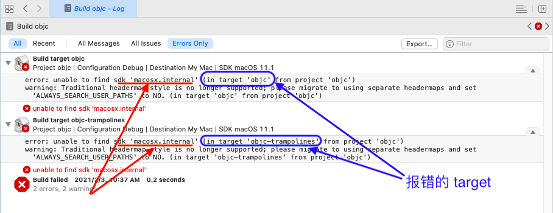
error: unable to find sdk 'macosx.internal' (in target 'objc' from project 'objc')
error: unable to find sdk 'macosx.internal' (in target 'objc-trampolines' from project 'objc')
解决：配置 TARGETS -> objc/objc-trampolines -> Build Settings -> Architectures -> Base SDK 为系统自适配 macOS！
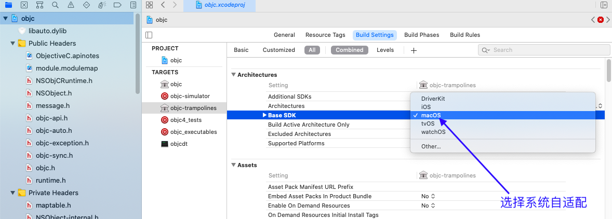
1.2、macosx.internal cannot be located
xcodebuild: error: SDK "macosx.internal" cannot be located.
xcrun: error: sh -c '/Applications/Xcode.app/Contents/Developer/usr/bin/xcodebuild -sdk macosx.internal -find clang++ 2> /dev/null' failed with exit code 16384: (null) (errno=No such file or directory)
xcrun: error: unable to find utility "clang++", not a developer tool or in PATH
这是由于 TARGETS -> objc -> Build Phases -> Run Script(markgc) 脚本引起的！
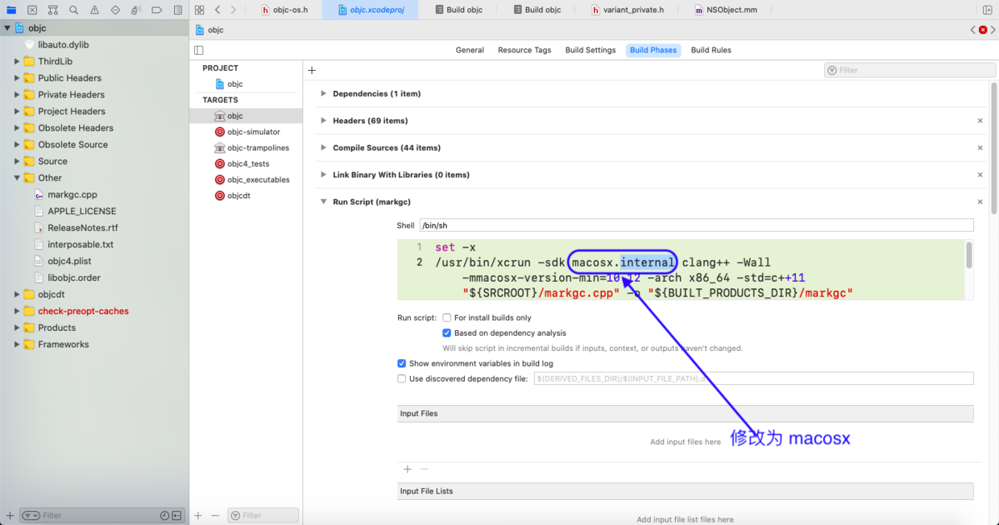
2、.h文件缺失
objc 相关联的库如下所示：
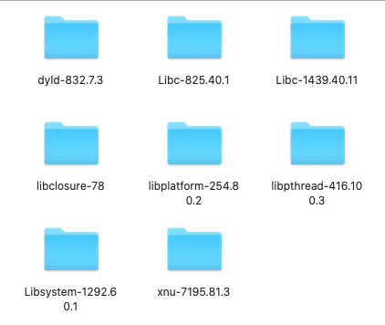
注意： objc4-818.2 缺失的头文件，笔者统一放在一个 ThirdLib 的文件夹下！
注意： 需要为文件夹 ThirdLib 配置文件路径 TARGETS -> objc -> Build Setting -> Heard Search Path！
注意： 编译报错缺失头文件，凡是多层文件夹（带有 / ），都在 ThirdLib 的文件夹下根据缺失头文件的路径，创建一个文件夹。
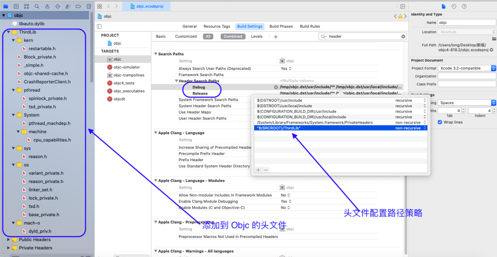
2.1、 sys/reason.h file not found
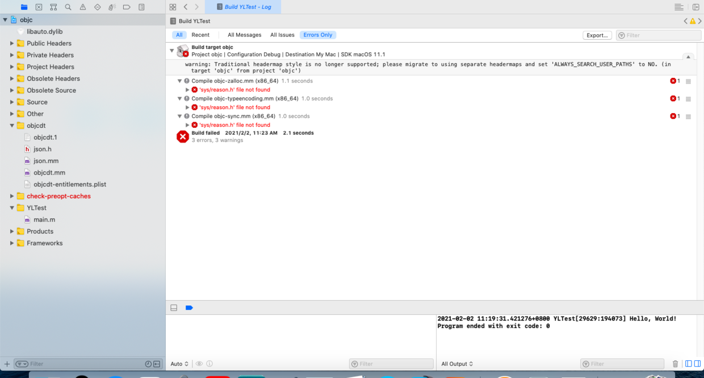
/objc4-818.2/runtime/objc-os.h:136:13: fatal error: 'sys/reason.h' file not found
# include <sys/reason.h>
^~~~~~~~~~~~~~
1 error generated.
解决：下载xnu-7195源码，在指定目录 bsd -> sys 找到文件 reason.h ，添加到 objc 项目的自定义目录 ThirdLib/sys！
2.2、mach-o/dyld_priv.h file not found
/objc4-818.2/runtime/objc-os.h:144:13: fatal error: 'mach-o/dyld_priv.h' file not found
# include <mach-o/dyld_priv.h>
^~~~~~~~~~~~~~~~~~~~
1 error generated.
解决：下载dyld-832 源码，在指定目录 include -> mach-o 找到文件 dyld_priv.h ，添加到 objc 项目的自定义目录ThirdLib/mach-o！
2.2.1、 bridgeos(3.0) 引发的错误
添加的 dyld_priv.h 文件的某些代码，不被笔者的系统所兼容：
/objc4-818.2/ThirdLib/mach-o/dyld_priv.h:130:130: error: expected ','
extern dyld_platform_t dyld_get_active_platform(void) __API_AVAILABLE(macos(10.14), ios(12.0), watchos(5.0), tvos(12.0), bridgeos(3.0));
/objc4-818.2/ThirdLib/mach-o/dyld_priv.h:156:148: error: expected ','
extern dyld_platform_t dyld_get_base_platform(dyld_platform_t platform) __API_AVAILABLE(macos(10.14), ios(12.0), watchos(5.0), tvos(12.0), bridgeos(3.0));
/objc4-818.2/ThirdLib/mach-o/dyld_priv.h:159:141: error: expected ','
extern bool dyld_is_simulator_platform(dyld_platform_t platform) __API_AVAILABLE(macos(10.14), ios(12.0), watchos(5.0), tvos(12.0), bridgeos(3.0));
/objc4-818.2/ThirdLib/mach-o/dyld_priv.h:163:166: error: expected ','
extern bool dyld_sdk_at_least(const struct mach_header* mh, dyld_build_version_t version) __API_AVAILABLE(macos(10.14), ios(12.0), watchos(5.0), tvos(12.0), bridgeos(3.0));
/objc4-818.2/ThirdLib/mach-o/dyld_priv.h:167:168: error: expected ','
extern bool dyld_minos_at_least(const struct mach_header* mh, dyld_build_version_t version) __API_AVAILABLE(macos(10.14), ios(12.0), watchos(5.0), tvos(12.0), bridgeos(3.0));
/objc4-818.2/ThirdLib/mach-o/dyld_priv.h:170:144: error: expected ','
extern bool dyld_program_sdk_at_least(dyld_build_version_t version) __API_AVAILABLE(macos(10.14), ios(12.0), watchos(5.0), tvos(12.0), bridgeos(3.0));
/objc4-818.2/ThirdLib/mach-o/dyld_priv.h:171:146: error: expected ','
extern bool dyld_program_minos_at_least(dyld_build_version_t version) __API_AVAILABLE(macos(10.14), ios(12.0), watchos(5.0), tvos(12.0), bridgeos(3.0));
/objc4-818.2/ThirdLib/mach-o/dyld_priv.h:176:230: error: expected ','
extern void dyld_get_image_versions(const struct mach_header* mh, void (^callback)(dyld_platform_t platform, uint32_t sdk_version, uint32_t min_version)) __API_AVAILABLE(macos(10.14), ios(12.0), watchos(5.0), tvos(12.0), bridgeos(3.0));
分析上述的报错日志，几个error 都引用了宏 __API_AVAILABLE() ；笔者在系统库 usr/include/Availability.h 发现了宏定义
/** 用于指定特定API可用的发布版本
* Platform names: macos, ios, tvos, watchos
*
* Examples:
* __API_AVAILABLE(macos(10.10))
* __API_AVAILABLE(macos(10.9), ios(10.0))
* __API_AVAILABLE(macos(10.4), ios(8.0), watchos(2.0), tvos(10.0))
* __API_AVAILABLE(driverkit(19.0))
*/
#define __API_AVAILABLE(...) __API_AVAILABLE_GET_MACRO(__VA_ARGS__,__API_AVAILABLE7, __API_AVAILABLE6, __API_AVAILABLE5, __API_AVAILABLE4, __API_AVAILABLE3, __API_AVAILABLE2, __API_AVAILABLE1, 0)(__VA_ARGS__)
可以看到，笔者的开发系统并不支持 Bridge OS 系统（Apple独立的T2安全芯片使用的嵌入式操作系统）！所以删掉 bridgeos(3.0) 即可！修改后的一句代码如下（往后碰到的 bridgeos error 皆如此处理 ）：
/// 修改前的代码
extern dyld_platform_t dyld_get_active_platform(void) __API_AVAILABLE(macos(10.14), ios(12.0), watchos(5.0), tvos(12.0), bridgeos(3.0));
/// 修改后的代码
extern dyld_platform_t dyld_get_active_platform(void) __API_AVAILABLE(macos(10.14), ios(12.0), watchos(5.0), tvos(12.0));
2.3、os/lock_private.h file not found
/objc4-818.2/runtime/objc-os.h:146:13: fatal error: 'os/lock_private.h' file not found
# include <os/lock_private.h>
^~~~~~~~~~~~~~~~~~~
1 errors generated.
解决：下载libplatform-254源码，在指定目录 private -> os 找到文件 lock_private.h ，添加到 objc 项目的自定义目录ThirdLib/os！
2.3.1、 bridgeos(4.0) 引发的错误
添加的 lock_private.h 文件的某些代码，不被笔者的系统所兼容：
/objc4-818.2/ThirdLib/os/lock_private.h:288:37: error: expected ','
tvos(13.0), watchos(6.0), bridgeos(4.0)) = 0x00040000,
同上文的 Bridge OS 处理类似，删除 bridgeos(4.0)：
OS_OPTIONS(os_unfair_lock_options, uint32_t,
OS_UNFAIR_LOCK_NONE OS_SWIFT_NAME(None)
OS_UNFAIR_LOCK_AVAILABILITY = 0x00000000,
OS_UNFAIR_LOCK_DATA_SYNCHRONIZATION OS_SWIFT_NAME(DataSynchronization)
OS_UNFAIR_LOCK_AVAILABILITY = 0x00010000,
OS_UNFAIR_LOCK_ADAPTIVE_SPIN OS_SWIFT_NAME(AdaptiveSpin)
__API_AVAILABLE(macos(10.15), ios(13.0),
tvos(13.0), watchos(6.0)) = 0x00040000,
);
2.4、os/base_private.h file not found
/objc4-818.2/ThirdLib/os/lock_private.h:31:10: fatal error: 'os/base_private.h' file not found
#include <os/base_private.h>
^~~~~~~~~~~~~~~~~~~
1 errors generated.
解决：下载xnu-7195源码，在指定目录 libkern -> os 找到文件 base_private.h ，添加到 objc 项目的自定义目录ThirdLib/os！
2.5、pthread/tsd_private.h file not found
/objc4-818.2/ThirdLib/os/lock_private.h:579:10: fatal error: 'pthread/tsd_private.h' file not found
#include <pthread/tsd_private.h>
^~~~~~~~~~~~~~~~~~~~~~~
1 error generated.
解决：下载libpthread-416.100.3 源码，在指定目录 private 找到文件 tsd_private.h ，添加到 objc 项目的自定义目录ThirdLib/pthread！
2.6、System/machine/cpu_capabilities.h file not found
/objc4-818.2/ThirdLib/pthread/tsd_private.h:52:10: fatal error: 'System/machine/cpu_capabilities.h' file not found
#include <System/machine/cpu_capabilities.h>
^~~~~~~~~~~~~~~~~~~~~~~~~~~~~~~~~~~
1 errors generated.
解决：下载xnu-7195源码，在指定目录 osfmk -> machine 找到文件 cpu_capabilities.h ，添加到 objc 项目的自定义目录ThirdLib/System/machine！
2.7、os/tsd.h file not found
/objc4-818.2/ThirdLib/pthread/tsd_private.h:56:10: fatal error: 'os/tsd.h' file not found
#include <os/tsd.h>
^~~~~~~~~~
1 errors generated.
解决：下载xnu-7195源码，在指定目录 libsyscall -> os 找到文件 tsd.h ，添加到 objc 项目的自定义目录ThirdLib/os！
2.8、pthread/spinlock_private.h file not found
/objc4-818.2/ThirdLib/pthread/tsd_private.h:57:10: fatal error: 'pthread/spinlock_private.h' file not found
#include <pthread/spinlock_private.h>
^~~~~~~~~~~~~~~~~~~~~~~~~~~~
1 error generated.
解决：下载libpthread-416.100.3 源码，在指定目录 private 找到文件 spinlock_private.h ，添加到 objc 项目的自定义目录ThirdLib/pthread！
2.9、System/pthread_machdep.h file not found
/objc4-818.2/runtime/objc-os.h:149:13: fatal error: 'System/pthread_machdep.h' file not found
# include <System/pthread_machdep.h>
^~~~~~~~~~~~~~~~~~~~~~~~~~
1 errors generated.
解决：下载Libc-825.40 源码，在指定目录 pthreads 找到文件 pthread_machdep.h ，添加到 objc 项目的自定义目录ThirdLib/System！
#
Showing All Errors Only
/objc4-818.2/ThirdLib/System/pthread_machdep.h:214:13: error: typedef redefinition with different types ('int' vs 'volatile OSSpinLock' (aka 'volatile int')) typedef int pthread_lock_t;
/objc4-818.2/ThirdLib/System/pthread_machdep.h:217:1: error: static declaration of '_pthread_has_direct_tsd' follows non-static declaration _pthread_has_direct_tsd(void)
/objc4-818.2/ThirdLib/System/pthread_machdep.h:244:1: error: static declaration of '_pthread_getspecific_direct' follows non-static declaration _pthread_getspecific_direct(unsigned long slot)
/objc4-818.2/ThirdLib/System/pthread_machdep.h:268:1: error: static declaration of '_pthread_setspecific_direct' follows non-static declaration _pthread_setspecific_direct(unsigned long slot, void * val)
4 errors generated.
解决：将 pthread_machdep.h 文件中相关函数注释即可！
2.10、CrashReporterClient.h file not found
/objc4-818.2/runtime/objc-os.h:250:13: fatal error: 'CrashReporterClient.h' file not found
# include <CrashReporterClient.h>
^~~~~~~~~~~~~~~~~~~~~~~
1 errors generated.
解决：下载Libc-825.40 源码，在指定目录 include 找到文件 CrashReporterClient.h ，添加到 objc 项目的自定义目录ThirdLib！
2.10.1、未经声明的 CRGetCrashLogMessage()
即使添加了 CrashReporterClient.h 文件，后期可能还会报错：
/objc4-818.2/runtime/objc-errors.mm:105:28: error: use of undeclared identifier 'CRGetCrashLogMessage'
char *oldmsg = (char *)CRGetCrashLogMessage();
/objc4-818.2/runtime/objc-errors.mm:127:9: error: use of undeclared identifier 'CRSetCrashLogMessage'
CRSetCrashLogMessage(newmsg);
2 errors generated.
解决：在添加 CrashReporterClient.h 文件之后，需要在 TARGETS -> objc -> Build Settings -> Preprocessor Macros 中添加 LIBC_NO_LIBCRASHREPORTERCLIENT 宏定义。
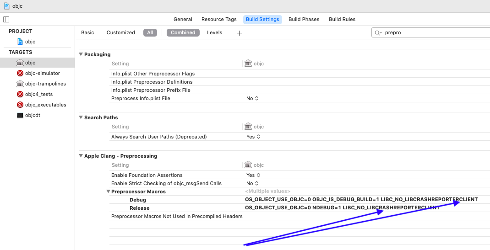
2.11、os/feature_private.h file not found
/objc4-818.2/runtime/objc-runtime.mm:36:10: fatal error: 'os/feature_private.h' file not found
#include <os/feature_private.h> // os_feature_enabled_simple()
^~~~~~~~~~~~~~~~~~~~~~
1 error generated.
解决：由于笔者无法找到该文件，只能在 objc 项目的 objc-runtime.mm 与 NSObject.mm 文件中注释该引用！
//#include <os/feature_private.h>
2.11.1、未声明的函数 os_feature_enabled_simple()
注释了 feature_private.h 文件之后，某些地方使用的该文件的函数，也将报错
/objc4-818.2/runtime/objc-runtime.mm:451:10: error: use of undeclared identifier 'os_feature_enabled_simple'
if (!os_feature_enabled_simple(objc4, preoptimizedCaches, true)) {
1 error generated.
对于未经声明的 os_feature_enabled_simple() 函数，只能注释！
/// objc-runtime.mm 文件的 void environ_init(void) 函数中
// if (!os_feature_enabled_simple(objc4, preoptimizedCaches, true)) {
// DisablePreoptCaches = true;
// }
2.12、objc-bp-assist.h file not found
/objc4-818.2/runtime/objc-os.mm:31:10: fatal error: 'objc-bp-assist.h' file not found
#include "objc-bp-assist.h"
^~~~~~~~~~~~~~~~~~
1 error generated.
解决：文件 objc-bp-assist.h 本应在 objc4-818.2 源码 中，但官方没有提供，所以只能在 objc-os.mm 文件中注释该引用！
//#include "objc-bp-assist.h"
2.12.1、注释objc-bp-assist.h 导致某些宏定义找不到
/objc4-818.2/runtime/objc-runtime.mm:379:36: error: use of undeclared identifier 'dyld_fall_2020_os_versions'
if (!dyld_program_sdk_at_least(dyld_fall_2020_os_versions))
/objc4-818.2/runtime/objc-runtime.mm:444:36: error: use of undeclared identifier 'objc4'
if (!os_feature_enabled_simple(objc4, preoptimizedCaches, true)) {
/objc4-818.2/runtime/objc-runtime.mm:444:43: error: use of undeclared identifier 'preoptimizedCaches'
if (!os_feature_enabled_simple(objc4, preoptimizedCaches, true)) {
3 errors generated.
在上个步骤，注释掉 objc-bp-assist.h 的引用后，在 objc-runtime.mm 文件的 void environ_init(void) 函数中找不到 dyld_fall_2020_os_versions 、objc4 、preoptimizedCaches 三个宏定义！
我们不妨现在 objc-runtime.mm 文件函数void environ_init(void)的上面声明这几个宏！
#define dyld_fall_2020_os_versions
#define objc4 preoptimizedCaches
#define preoptimizedCaches
2.13、objc-shared-cache.h file not found
/objc4-818.2/runtime/objc-opt.mm:113:10: fatal error: 'objc-shared-cache.h' file not found
#include <objc-shared-cache.h>
^~~~~~~~~~~~~~~~~~~~~
1 error generated.
解决：下载dyld-832 源码，在指定目录 include 找到文件 objc-shared-cache.h ，添加到 objc 项目的自定义目录ThirdLib！
2.14、os/linker_set.h file not found
/objc4-818.2/runtime/objc-class.mm:163:10: fatal error: 'os/linker_set.h' file not found
#include <os/linker_set.h>
^~~~~~~~~~~~~~~~~
1 error generated.
解决：下载Libc-1439源码，在指定目录 os 找到文件 linker_set.h ，添加到 objc 项目的自定义目录ThirdLib/os！
2.14.1、不被识别的宏定义 dyld_platform_version_
/objc4-818.2/runtime/objc-os.mm:567:40: error: use of undeclared identifier 'dyld_platform_version_macOS_10_13'
if (!dyld_program_sdk_at_least(dyld_platform_version_macOS_10_13)) {
1 error generated.
分析错误日志：发现是找不到定义的 dyld_platform_version_macOS_10_13！笔者发现， objc 项目中很多地方都要相关的宏定义 dyld_platform_version_ ，都会报错 use of undeclared identifier！
由于一些文件找不到的缘故，笔者在此处不得不使用旧版本的代码来处理，在 dyld_priv.h 文件定义几个相关宏：
/// dyld_priv.h
/// 文件起始处
#define DYLD_MACOSX_VERSION_10_11 0x000A0B00
#define DYLD_MACOSX_VERSION_10_12 0x000A0C00
#define DYLD_MACOSX_VERSION_10_13 0x000A0D00
#define DYLD_MACOSX_VERSION_10_14 0x000A0E00
将报错处的 dyld_platform_version_macOS_10_13 替换为 DYLD_MACOSX_VERSION_10_13！
///if (!dyld_program_sdk_at_least(dyld_platform_version_macOS_10_13)) {
if (!dyld_program_sdk_at_least(DYLD_MACOSX_VERSION_10_13)) {
2.14.2、不匹配的函数 dyld_program_sdk_at_least()
/objc4-818.2/runtime/objc-runtime.mm:383:10: error: no matching function for call to 'dyld_program_sdk_at_least'
if (!dyld_program_sdk_at_least(DYLD_MACOSX_VERSION_10_13))
1 error generated.
既然 dyld_program_sdk_at_least() 函数不适配，笔者继续使用老版本的判断方法：
/// if (!dyld_program_sdk_at_least(DYLD_MACOSX_VERSION_10_13)) {
if (!(dyld_get_program_sdk_version() >= DYLD_MACOSX_VERSION_10_13)) {
/// if (!dyld_program_sdk_at_least(dyld_platform_version_macOS_10_11)) {
if (!(dyld_get_program_sdk_version() >= DYLD_MACOSX_VERSION_10_11)) {
/// if (!DisableTaggedPointerObfuscation && dyld_program_sdk_at_least(dyld_fall_2018_os_versions)) {
if (!DisableTaggedPointerObfuscation && (dyld_get_program_sdk_version() >= dyld_fall_2018_os_versions)) {
2.14.3、水土不服的宏定义 sdkIsAtLeast()
error: use of undeclared identifier 'dyld_platform_version_macOS_10_12'
error: use of undeclared identifier 'dyld_platform_version_iOS_10_0'
error: use of undeclared identifier 'dyld_platform_version_tvOS_10_0'
error: use of undeclared identifier 'dyld_platform_version_watchOS_3_0'
error: use of undeclared identifier 'dyld_platform_version_bridgeOS_2_0'
上述几个错误，仅仅是由于 sdkIsAtLeast(10_12, 10_0, 10_0, 3_0, 2_0) 引起的！笔者在 objc-os.h 文件中找到了它的声明：
#define sdkIsAtLeast(x, i, t, w, b) \
(dyld_program_sdk_at_least(dyld_platform_version_macOS_ ## x) || \
dyld_program_sdk_at_least(dyld_platform_version_iOS_ ## i) || \
dyld_program_sdk_at_least(dyld_platform_version_tvOS_ ## t) || \
dyld_program_sdk_at_least(dyld_platform_version_watchOS_ ## w) || \
dyld_program_sdk_at_least(dyld_platform_version_bridgeOS_ ## b))
可以看到，由于不被识别的宏定义 dyld_platform_version_ 与不匹配的函数 dyld_program_sdk_at_least() ，这个宏 sdkIsAtLeast() 严重的水土不服！
笔者在此处，将 sdkIsAtLeast() 还原为旧版本的定义：
#if TARGET_OS_OSX
# define DYLD_OS_VERSION(x, i, t, w, b) DYLD_MACOSX_VERSION_##x
# define sdkVersion() dyld_get_program_sdk_version()
#elif TARGET_OS_IOS
# define DYLD_OS_VERSION(x, i, t, w, b) DYLD_IOS_VERSION_##i
# define sdkVersion() dyld_get_program_sdk_version()
#elif TARGET_OS_TV
# define DYLD_OS_VERSION(x, i, t, w, b) DYLD_IOS_VERSION_##t
# define sdkVersion() dyld_get_program_sdk_version()
#elif TARGET_OS_BRIDGE
# if TARGET_OS_WATCH
# error bridgeOS 1.0 not supported
# endif
# define DYLD_OS_VERSION(x, i, t, w, b) DYLD_IOS_VERSION_##t
# define sdkVersion() dyld_get_program_sdk_bridge_os_version()
#elif TARGET_OS_WATCH
# define DYLD_OS_VERSION(x, i, t, w, b) DYLD_WATCHOS_VERSION_##w
# define sdkVersion() dyld_get_program_sdk_watch_os_version()
#else
# error unknown OS
#endif
#define sdkIsAtLeast(x, i, t, w, b) \
(sdkVersion() >= DYLD_OS_VERSION(x, i, t, w, b))
2.15、_simple.h file not found
/objc4-818.2/runtime/objc-errors.mm:77:10: fatal error: '_simple.h' file not found
#include <_simple.h>
^~~~~~~~~~~
1 error generated.
解决：下载libplatform-254源码，在指定目录 private 找到文件 _simple.h ，添加到 objc 项目的自定义目录ThirdLib！
2.16、Cambria/Traps.h.h file not found 和 Cambria/Cambria.h.h file not found
/objc4-818.2/runtime/objc-cache.mm:87:10: fatal error: 'Cambria/Traps.h' file not found
#include <Cambria/Traps.h>
^~~~~~~~~~~~~~~~~
/objc4-818.2/runtime/objc-cache.mm:88:10: fatal error: 'Cambria/Cambria.h' file not found
#include <Cambria/Cambria.h>
^~~~~~~~~~~~~~~~~~~~~~
2 error generated.
解决：在 objc-cache.mm 文件中注释相关引用！
#if TARGET_OS_OSX
//#include <Cambria/Traps.h>
//#include <Cambria/Cambria.h>
#endif
2.17、Block_private.h file not found
/objc4-818.2/runtime/objc-block-trampolines.mm:36:10: fatal error: 'Block_private.h' file not found
#include <Block_private.h>
^~~~~~~~~~~~~~~~~
1 error generated.
解决：下载 libclosure-78源码，找到文件 Block_private.h ，添加到 objc 项目的自定义目录ThirdLib！
2.18、kern/restartable.h file not found
/objc4-818.2/runtime/objc-cache.mm:1038:10: fatal error: 'kern/restartable.h' file not found
#include <kern/restartable.h>
^~~~~~~~~~~~~~~~~~~~
1 error generated.
解决：下载xnu-7195源码，在指定目录 osfmk -> kern 找到文件 restartable.h ，添加到 objc 项目的自定义目录ThirdLib/kern！
2.18.1、未经声明的 oah_is_current_process_translated()
/objc4-818.2/runtime/objc-cache.mm:1121:13: error: use of undeclared identifier 'oah_is_current_process_translated'
if (oah_is_current_process_translated()) {
/objc4-818.2/runtime/objc-cache.mm:1122:33: error: use of undeclared identifier 'objc_thread_get_rip'
kern_return_t ret = objc_thread_get_rip(threads[count], (uint64_t*)&pc);
2 errors generated.
解决：在 objc-cache.mm 文件中注释相关代码！
if (oah_is_current_process_translated()) {
kern_return_t ret = objc_thread_get_rip(threads[count], (uint64_t*)&pc);
if (ret != KERN_SUCCESS) {
pc = PC_SENTINEL;
}
} else {
pc = _get_pc_for_thread (threads[count]);
}
2.18.2、
/objc4-818.2/runtime/objc-runtime-new.mm:176:1: error: '_static_assert' declared as an array with a negative size
STATIC_ASSERT((~ISA_MASK & MACH_VM_MAX_ADDRESS) == 0 ||
解决：在 objc-runtime-new.mm 文件中注释相关代码！
//STATIC_ASSERT((~ISA_MASK & MACH_VM_MAX_ADDRESS) == 0 ||
// ISA_MASK + sizeof(void*) == MACH_VM_MAX_ADDRESS);
2.19、os/reason_private.h file not found
/objc4-818.2/runtime/NSObject.mm:45:10: fatal error: 'os/reason_private.h' file not found
#include <os/reason_private.h>
^~~~~~~~~~~~~~~~~~~~~
1 error generated.
解决：下载xnu-7195源码，在指定目录 libkern -> os 找到文件 reason_private.h ，添加到 objc 项目的自定义目录ThirdLib/os！
2.20、os/variant_private.h file not found
/objc4-818.2/runtime/NSObject.mm:46:10: fatal error: 'os/variant_private.h' file not found
#include <os/variant_private.h>
^~~~~~~~~~~~~~~~~~~~~~
1 error generated.
解决：下载Libc-1439源码，在指定目录os 找到文件 variant_private.h ，添加到 objc 项目的自定义目录ThirdLib/os！
3、链接配置有误
3.1、二进制重排文件 .order 的路径错误
ld: can't open order file: /Applications/Xcode.app/Contents/Developer/Platforms/MacOSX.platform/Developer/SDKs/MacOSX11.1.sdk/AppleInternal/OrderFiles/libobjc.order
clang: error: linker command failed with exit code 1 (use -v to see invocation)
解决：在 TARGETS -> objc -> Build Settings -> Linking -> Order File 为 .order 文件配置路径！
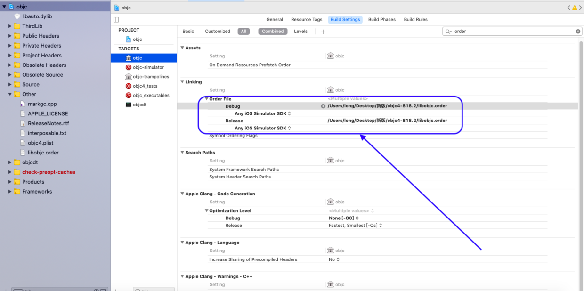
3.2、删除 -lCrashReporterClient
ld: library not found for -lCrashReporterClient
clang: error: linker command failed with exit code 1 (use -v to see invocation)
解决：找到 TARGETS -> objc -> Build Settings -> Other Link Flags 删除 -lCrashReporterClient。
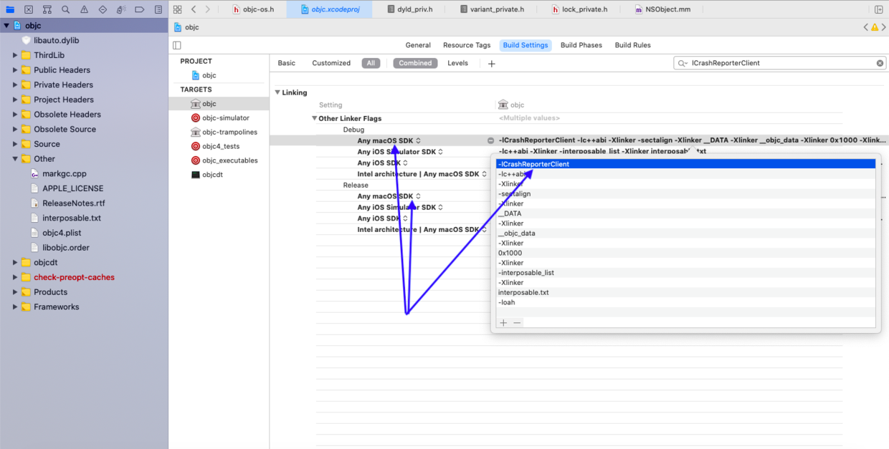
3.3、删除 -loah
ld: library not found for -loah
clang: error: linker command failed with exit code 1 (use -v to see invocation)
解决：找到 TARGETS -> objc -> Build Settings -> Other Link Flags 删除 -loah。
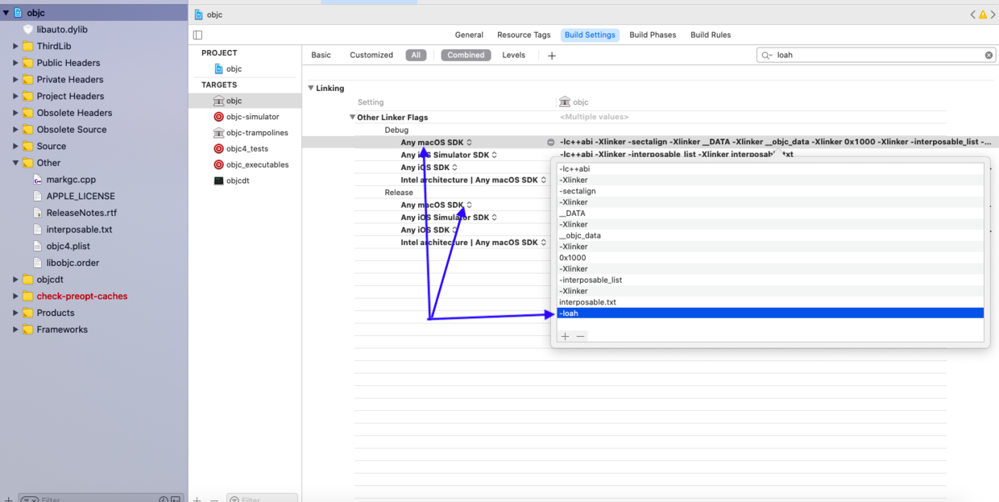
4、调试 objc
花了这么多时间，终于将 objc 编译成功；接下来，就可以调试程序了！
笔者在这里新建了一个 target：macOS -> Command Line Tool
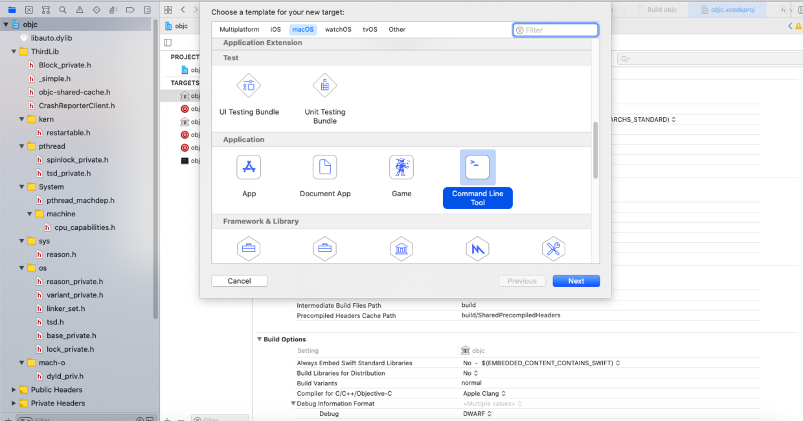
然后添加依赖 objc：
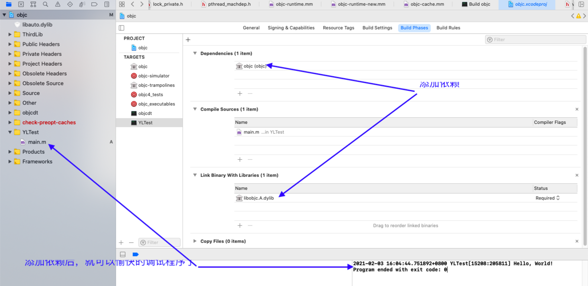
此时，已经可以使用新建的 target 调试 objc 了！